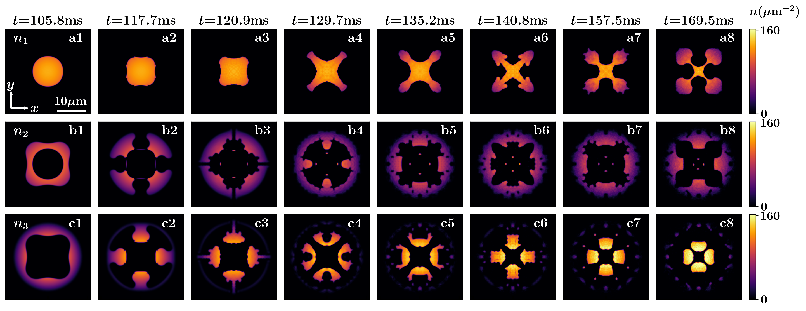
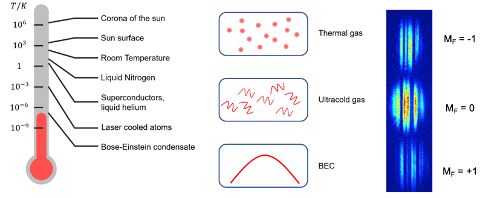

Arpana Saboo
PhD in Physics
Thesis: Interface dynamics and topological structures in spinor Bose–Einstein condensates
Download CV
Thesis: Interface dynamics and topological structures in spinor Bose–Einstein condensates
Download CVI am a theoretical physicist working in the field of ultracold quantum gases. My research focuses on interface dynamics, hydrodynamic instabilities, and topological structures in spinor Bose–Einstein condensates. Using analytical methods and numerical simulations of the Gross–Pitaevskii equation, I study how complex patterns and collective behaviour emerge in quantum fluids.
Alongside my scientific work, I am deeply interested in the human side of building a research life. I often write about the experience of doing a PhD — the discipline, uncertainty, persistence, and personal growth that unfold alongside research.
Outside formal research writing, I share reflections on transitions, travel, family, resilience, and the emotional architecture behind intellectual work.

Interface dynamics in phase-separated multi-component Bose–Einstein condensates.

Kelvin–Helmholtz and counter-superflow instabilities in rotating superfluids.

Nonlinear dynamics and topological excitations in spin-1 Bose–Einstein condensates.
Conference on Quantum Fluids and Superfluid Dynamics.
Presentation on hydrodynamic instabilities in Bose–Einstein condensates.


Email: arpana@example.com
Department of Physics
Indian Institute of Technology Kharagpur